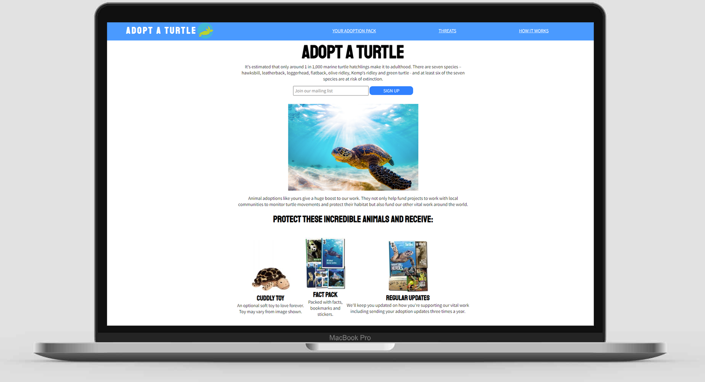

Hi, I'm Natasha Ferenczy.
I'm learning to code and build websites.
I'm a marketing and communications professional living in London, UK teaching myself to design and code websites and more.
About Me
Hi! I'm Tash, a marketing and communications professional living in London, UK.
I have four years of experience working in small communications and marketing teams at not-for-profit organisations, and I am now expanding my skills and learning to code. I have experience with social media, email marketing, SEO, and content marketing.
I am currently working through the Front-End Engineer Path on Cocecademy. The technologies I've been using recently include:
- JavaScript (ES6)
- HTML & CSS
- WordPress
Things I've Built
